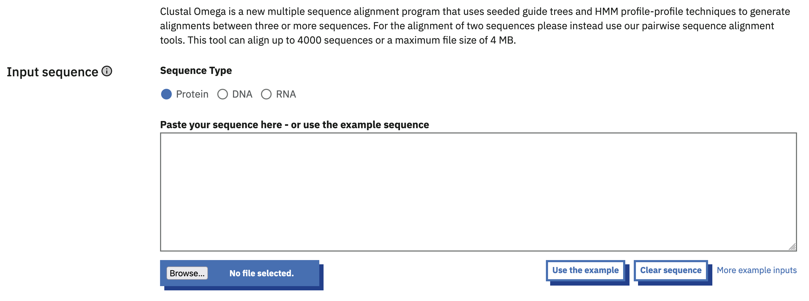

BIO504 - TP 3
Alignements multiples, recherche d’une séquence consensus et dans les bases de données
1 Alignement multiples, recherche d’une séquence consensus et dans les bases de données
1.1 Objectifs du TP
- Réaliser des alignements multiples
- Définir un algorithme de comparaison de positions pour identifier une séquence consensus
- Coder l’algorithme
- Définir une séquence logo
- Utiliser l’outil de recherche de similitudes dans les bases de données (BLAST)
- Notions de phylogénétique
1.2 Alignement de séquences multiples
Afin de comparer toutes les séquences d’hémoglobines de la famille \(\beta\), nous allons réaliser un alignement multiple des 5 séquences (HBB, HBD, HBE1, HBG2, HBG2). L’alignement de plus de deux séquences est normalement obtenu avec l’outil Clustal. On dénombre plusieurs versions de ce programme (X, W, \(\Omega\) [Omega]).
Les versions X et W, longtemps utilisées ne sont plus mises à jour et ont été remplacées par la version \(\Omega\).
Lancez Clustal \(\Omega\)

Vous devez créer un fichier FASTA de la totalité des séquences à comparer
- Comment procédez-vous ?
- Quel type de séquences choisissez-vous ?
- Comment transférez-vous les données à Clustal \(\Omega\) ?
Démarrez le calcul en cliquant sur Submit et patientez le temps que le résultat s’affiche
- Qu’affiche le résultat ?
- Cliquez le bouton Alignment with colours (Show), quelle est la signification de cet affichage ?
Cliquez sur l’onglet Result Files et analysez chacun des liens affichés
- Que signifient-ils ?
- Que pouvez-vous en déduire ?
- Que retrouvez-vous dans le lien Percent Identity Matrix ?
- Retrouvez-vous les informations calculées lors du TP2 ?
Comparez maintenant toutes les hémoglobines entre elles (\(\alpha\) et \(\beta\))
- Classer les et commenter. Visualisez-vous les deux familles ?
1.3 Étude phylogénique : Analyse de la famille multigénique de l’hémoglobine
On peut déterminer la distance évolutive entre 2 séquences par le nombre de substitutions qui se sont produites sur les 2 lignées évolutives depuis l’ancêtre commun
Revenez sur la page des résultats obtenus précédemment et cliquez sur le bouton Phylogenic Tree
- Quelle est la signification du graphique ?
- Faites varier l’affichage du phylogramme pour obtenir l’affichage de votre choix
- Donnez maintenant la phylogénie des 10 hémoglobines ?
1.4 Définition d’une séquence consensus
1.4.1 Obtention des séquences introniques
Vous allez tenter de définir la présence de séquences de reconnaissance des introns. Pour cela, vous devez comparer les séquences introniques entre elles.
Utilisez les données du NCBI pour :
- Récupérer les 15 premiers nucléotides des introns des gènes HBB, HBD, HBE1, HBG1, HBG2 copiez-les dans un fichier au format FASTA
- Récupérer les 15 derniers nucléotides des introns des gènes HBB, HBD, HBE1, HBG1, HBG2 créez un autre fichier au format FASTA
- Comment procédez-vous ?
1.4.2 Développement de l’agorithme
Il s’agit ici de trouver s’il existe une séquence particulière signalant le début et la fin des introns. Cette(ces) séquence(s) invariante(s) doi(ven)t logiquement se retrouver dans chaque intron.
Dans un premier temps, ne prenez en compte que le cas des introns de HBB
Aligner manuellement les séquences de début et de fin d’introns en les écrivant l’une sous l’autre dans le fichier.
- Trouvez-vous des nucléotides en positions fixes ?
Afin de pouvoir généraliser cette observation, il faut pouvoir répéter la comparaison des séquences introniques aux autres introns. Pour cela, nous allons créer un outil de comparaison de séquence et d’écriture de séquence consensus.
Dans un premier temps, réfléchissez et définissez l’algorithme de l’outil. (Écrire un algorithme revient à décrire en opérations simples une méthode d’analyse)
- Définissez l’opération de base à effectuer ?
- Combien de fois devez-vous la faire ?
- Écrivez un premier algorithme pour cette méthode répétitive
En informatique, les opérations répétitives sont normalement remplacées par une boucle incluant l’opération de base, répétée n fois dans la boucle. Les valeurs numériques de la méthode sont alors remplacées par des paramètres (des valeurs) stockées dans des variables mémoires.
Pour simplifier la procédure et traiter ensemble les débuts et les fin d’introns, vous écrirez les séquences sous la forme suivante :
15 premiers nucléotides de l’intron … 15 derniers nucléotides de l’intron- Quelles sont les parties de votre algorithme que vous devez transformer en paramètres ?
- Quelles vont être les variables à définir ?
- Écrivez un algorithme paramétré de la méthode de comparaison ?
1.4.3 Transcription sous R et vérification dans Clustal
Maintenant que votre algorithme est écrit, vous pouvez le transcrire dans n’importe quel langage de votre choix.
Pour illustrer ce point, transcrivez votre algorithme dans R en utilisant vos connaissances de la programmation de R, le logiciel RStudio et l’aide fournie en Documents Annexes 4 (Aide pour le code R)
Votre outil vous permet-il de voir une séquence consensus définissant le début et la fin des introns ?
Utilisez un programme d’alignement de séquences pour vérifier votre analyse des introns de HBB
- Quel programme d’alignement utilisez-vous ?
- Quelle est le résultat de l’alignement ?
- Coïncide-t-il avec le résultat de votre script R ?
Arrangez-vous maintenant pour comparer dans le même programme la totalité des introns de la famille \(\beta\)
- Quelle est la séquence consensus présente dans tous les introns ?
1.4.4 Création d’une séquence logo
Une séquence logo est une représentation graphique de la conservation des nucléotides ou des acides aminés dans des séquences.
Vous allez maintenant utiliser un programme de création de logos de séquences afin de visualiser graphiquement l’existence de la séquence consensus des hémoglobines.
Ouvrez la page de l’outil en ligne WebLogo
Collez vos séquences d’introns dans la case Multiple Sequence Alignment du logiciel
- Que vous indique le résultat obtenu ?
Une analyse similaire a été réalisée sur la frontière entre Exon-Introns pour une centaine de séquences différentes. Le résultat est visualisable en cliquant sur les liens ci-dessous (les paramètres sont déjà rentrés dans la page du site) :
Les paramètres sont déjà remplis, vous avez juste à cliquer sur le bouton Create logo.
- Retrouvez-vous les positions caractéristiques des séquences donneuses et acceptrices des introns que vous avez identifiées ?
- Quels sont les informations supplémentaires que donnent les séquences logo
1.5 Recherche de similitudes dans les bases de données
1.5.1 Recherche dans la base de données Swiss-Prot
Vous allez maintenant rechercher dans une base de données protéique les séquences correspondantes à celle de la protéine HBB.
Pour commencer rechercher toutes les séquences similaires à HBB dans la base de donnée Swiss-Prot
- Connectez-vous sur le site de BLAST.
Quel programme blast allez-vous choisir pour rechercher les séquences protéiques HBB dans la base de données Swiss-Prot ?
Copiez la séquence de la protéine HBB dans la case Enter Query Sequence ou indiquez le chemin jusqu’à un fichier fasta contenant la séquence protéique de HBB en cliquant sur le bouton Browse.
- Quel paramètre devez-vous spécifier dans blast pour rechercher dans Swiss-Prot ?
- Quelle est la matrice proposée par défaut ?
- Quels sont les paramètres de Gap ?
- Quelle est la taille du mot utilisé pour le hachage ?
- Combien de temps a duré la recherche ?
- Quel est la version de blast utilisée ?
- Quel est le résultat donné par BLAST ?
- Quel est le score maximal ?
- Quelle est la E-value ?
- Ce résultat est-il valide selon vous ?
1.5.2 Recherche dans la base de donnée RefSeq
Revenez sur la page principale en cliquant le bouton Blast en haut à gauche de la page.
Recherchez maintenant la même séquence mais dans la base de données RefSeq_rna
- Quel programme blast devez-vous choisir ?
- Les paramètres de matrice, gap et taille du mot sont-ils différents ? Que reflètent-ils ?
- Combien de temps a duré la recherche ?
- Pourquoi une telle variation par rapport à la recherche dans Swiss-Prot ?
- Comparez la qualité des résultats entre les deux recherches ?
- Quelle est la E-value maximale ?
- Quel est le résultat proposé par BLAST ?
- Comparez les résultats affichés avec ceux obtenus précédemment, que concluez-vous ?
1.6 Sauvegarde de votre travail
Si pouvez maintenant faire la sauvegarde définitive de votre travail en sauvegardant comme précédemment. Si vous avez réalisé une sauvegarde intermédiaire, vérifier si vous pouvez remplacer l’ancienne sauvegarde par la nouvelle.
1.7 Pour aller plus loin (Travail personnel)
- Modifiez votre algorithme pour analyser non plus les 2 séquences des introns de HBB, mais les deux séquences des introns des 5 gènes de la famille ß
- Paramétrer votre algorithme pour qu’il demande les séquences à analyser
- Recherchez les séquences homologues à HBA1 dans Swiss-Prot et RefSeq_rna
- Affichez l’arbre phylogénetique pour les protéines de la famille alpha
- Affichez l’arbre phylogénetique pour les protéines des deux familles d’hémoglobine
Ces pages de Thierry Gautier sont licenciées CC BY-NC-SA 4.0